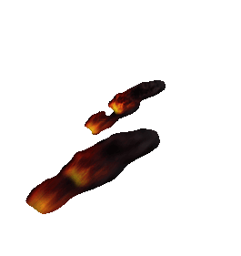
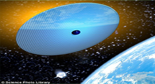

화성의 대기 밀도는 지구와 달리 매우 낮다. 3.721m/s로 지구 중력의 3분의 1에 불과하다. 여기에 낮은 자기장으로 인한 보호효과가 상실되면서 태양풍으로부터 대기의 상당부분을 우주로 날려보낸다.
화성의 대기를 지구와 같은 수준의 밀도로 형성하는 방법은 다음과 같은 방안이 제시된다.
/ 인공 자기장 설치
/ 에어로 갤
/ 화학 화합물로 인한
온실효과
/ 인공 강우
화성의 대기 밀도를
높이는 방안들

에어로겔은 90-99.8% 공기로 이루어져 있고, 밀도는 3-150 mg/cm3이다. 에어로겔은 스티로폼같은 느낌이 나지만 말랑하지 않고 한 번 눌리면 복원되지 않는다.
>> 태양풍
화성에 대기를 약하게 만드는 요인
나사에서 태양과 화성 사이를 감싸는 자기장을 발사해 태양풍으로부터 화성을 보호하자고 했다. "지구에서 인공적으로 자기장을 만들면 화성 대기를 휩쓸던 태양풍을 막아줘 화성도 지구처럼 적당한 대기, 적당한 기온, 압력 등이 생길 수 있다"고 설명했다.
막고 화성 대기 강화
이 방법으로 화성 대기가 이전처럼 되돌아간다면 오른쪽 사진과 같이 지구와 비슷한 모습을 갖게 될 것
이다. "지구에서 인공적으로 자기장을 만들어주면 화성 대기를 휩쓸던 태양풍을 막아줘 화성도 지구처럼 적당한 대기, 적당한 기온, 압력 등이 생길 수 있다"고 설명했다.
화성에는 40억년 전까지만 해도 지구와 마찬가지로 호수와 강, 바다를 형성했을 만큼 물이 풍부했을 것으로 과학자들은 추정한다. 그러나 지금의 화성 표면에서는 물을 찾아볼 수 없다. 화성이 태양과 가까워지는 때 화성 지표면 온도 상승, 먼지 폭풍 등의 영향으로 물이 수증기가 돼 대기층으로 올라간 뒤, 지구처럼 자기장의 보호를 받지 못한 채 우주로 유실돼 버렸다는 것이다
생존의 필수 요소 물을 화성에 공급하는 방법은 다음과 같은 방안이 제시된다.
/ 주변 소행성에서 채취
/ 인공 강우
화성에 물 공급하는 방안들
화성의 기온을 높인 다음 인공강우 이용하는 방법
인공강우란 인공적인 방법으로 얼음을 형성시켜 비나 눈이 내리게 하는 것
(1) 가상항공기에 요오드화은 연소탄을 1시간에 걸쳐 점화시킨 뒤 투하합니다.
(2) 연소탄이 타면서 얼음의 결정 구조와 비슷한 요오드화은 알갱이 방출됩니다.
(3) 살포된 요오드화은 알갱이 주위에 미세한 수분이 달라붙습니다.
(4) 요오드 화은과 수분이 결합하면 주변의 찬 공기로 인해 작은 얼음 결정이 생성 됩니다.
(5) 이후, 눈송이로 성장하고 눈이 내리거나 도중에 녹아 비가 내립니다.
( 수증기 )
>메탄에서 수소를 추출한 뒤 산소와 결합해 물 생성
탄소와 수소를 결합시켜 메탄을 만들고 산소를 떼어내는 과정이 가능하고.
실제로도 화성의 대기에서 메탄과 소량의 산소가 발견된다.
메탄에서 수소를 추출하고 산소와 결합하면 물을 얻을 수도 있다.
( 요오든화온 )
지금까지 실험에서는 지구 작물을 완벽히 재배하는 데 몇 가지 어려움을 겪고 있다. 미래에 현지에서 조달 가능한 퇴비 등의 자원도 고려해야 한다. 실험에 사용된 유기물 배합은 현지에서 쉽게 구할 수 있을 것으로 예상되는 사람의 인분과 소변 성분을 위주로 했다. 식물 성장에 필수적인 박테리아에 의한 질소 고정도 해결해야 할 문제다.
인간이 호흡할 수 있을 정도의 수준까지 대기와 기압을 형성하는 방법은 다음과 같은 방안이 제시된다.
/ 유전공학 식물
/ 이끼
인간이 호흡할 수 있을
정도의 기압 조성 방안
유럽항공우주국의 바이오팬 시설에서 외계생명체 실험의 하나로, 다른 두가지
형태의 이끼를 지구로 귀환하기 전까지 14.6일동안 다양한 온도와 자외선,
우주방사선 등에 노출한 결과 생존율 또한 광합성 능력도 그대로인 것으로
나타났다. 끼는 극단적인 환경을 좋아하고 지구에서도 가장 험한 환경에서도
생존할 수 있는 것으로 알려져 있다. 이 끼는 다중세포로 육안으로 식별 가능하고 진핵생물로 그 진화과정에서 박테리아보다 훨씬 진화한 근대적인 조직이다.
높은 자외선을 비롯한 험난한 우주공간에서도
견딜 수 있을 만큼 생명력이 대단한 것으로 나타났다.


기압 : 100 hPa
질소 96% / 이산화탄소 4%
아나베나는 화성 자원으로 활용될 수 있고
다른 유기체를 키우는데 특히 도움된다.
그와 관련이 있는 종들도 식용가능하고
유전공학에도 적합하며, 가혹한 조건에서
생존을 위한 특수한 휴면 세포를 형성한다.
시아노박테리아는 화성에서 성장할 수
있는 능력을 보여주었고, 다른 미생물들을
기르는데도 사용할 수 있다”
아나베나를 지구보다 10배 낮은 100 hPa
기압에서 질소 96%와 이산화탄소 4%
혼합물로 10일 동안 성장시켰다. 이
박테리아는 주변 공기에서도 잘 자랐다.
이어 수정된 압력과 표토의 조합에서
테스트를 했다. 대조군으로, 주변 공기
혹은 같은 저압의 인공 대기 아래의 표준
배지에서 아나베나를 길렀다.

인류가 살 수 있는 환경을 만들기 위해물이 존재할 수 있도록 화성의 대기온도를 높여야한다. 화성을 지구화시키기 위해선 이산화탄소의 농도를 높인다.
화성을 지구화시키기 위해 화성의 대기온도를 높이는 방법은 다음과 같다.
/ 화석연료 태우기
/ 소행성,운석 충돌
/ 핵 떨어트리기
/ 초대형 거울 설치
화석연료를 태워 온실효과를 일으키기
소행성이나 운석을 화성에 유도해서 충돌시키기
사람이 호흡하기 위해서는 대기에 완충 기체가 필요하다. 지구에서 이 역할을 하는 것은 공기의 78% 를 차지하는 질소이다. 암모니아는 질소 + 수소로 구성되어 있어 그것이 함유된 소행성을
발견한다. 암모니아를 다량 포함한 소행성의 궤도를 조정하여 화성과 충돌시킨다면, 거대한
소행성이 화성 표면에 부딪히는 충격 자체만으로도 온도가 상승할 수 있다.
화성의 표면온도: 약 -140~20°C
화성의 평균온도: 약 -80°c
핵 떨어트리기
핵무기를 화성 극지방에 얼어붙은 거대한 층을 이루고 있는 이산화탄소에 떨어트려 녹인다.
온실효과를 일으키는 주요 물질인 이산화탄소를 인위적으로 증발시켜 화성 온도를 높이고,
대기를 두껍게 만든다.
초대형 거울을 우주에 설치
우주에 거울을 설치하여 태양 빛을 반사
시켜 화성 한 지점 온도를 급상승 시킨다.
화성의 기온을 높이는 4가지 방법